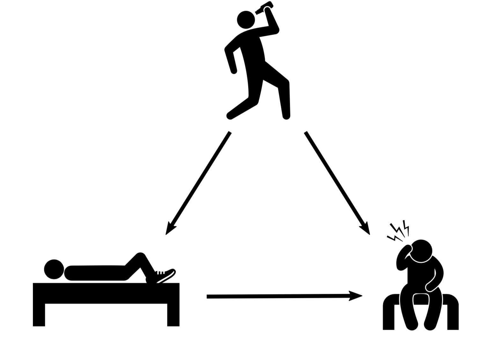
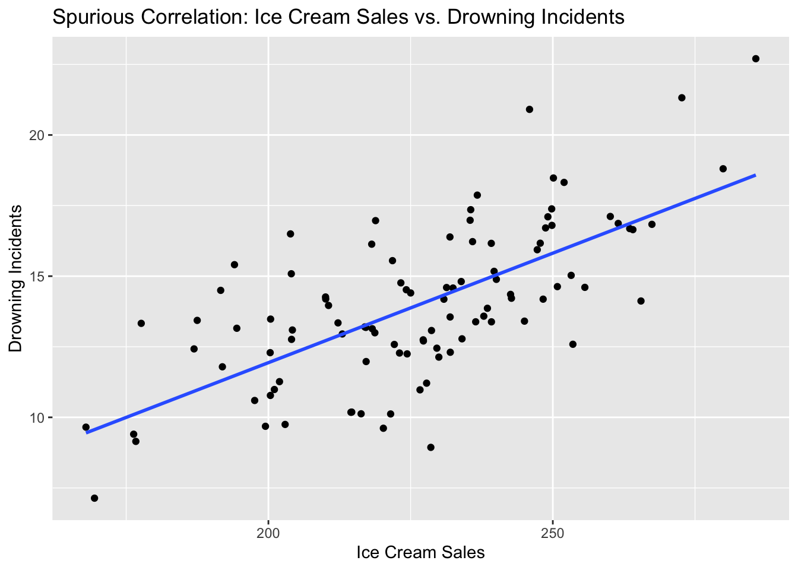
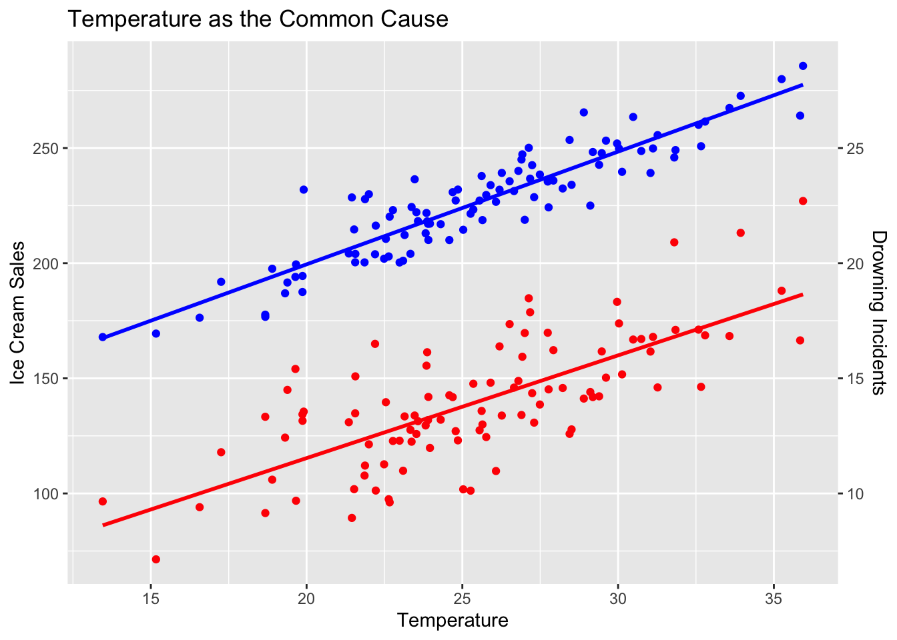
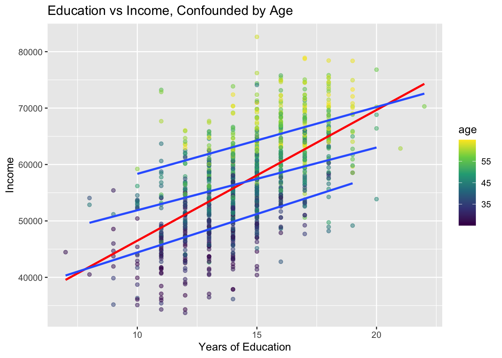
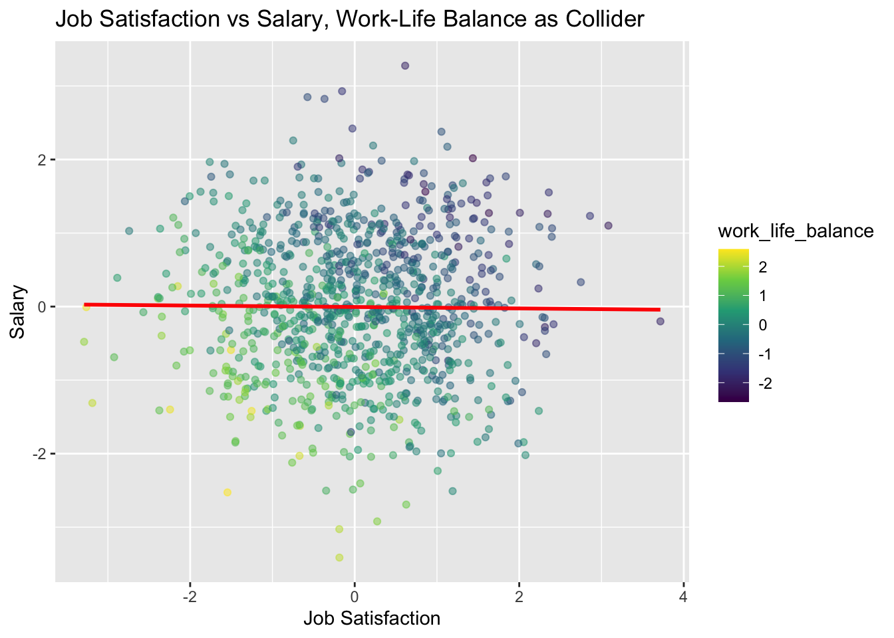
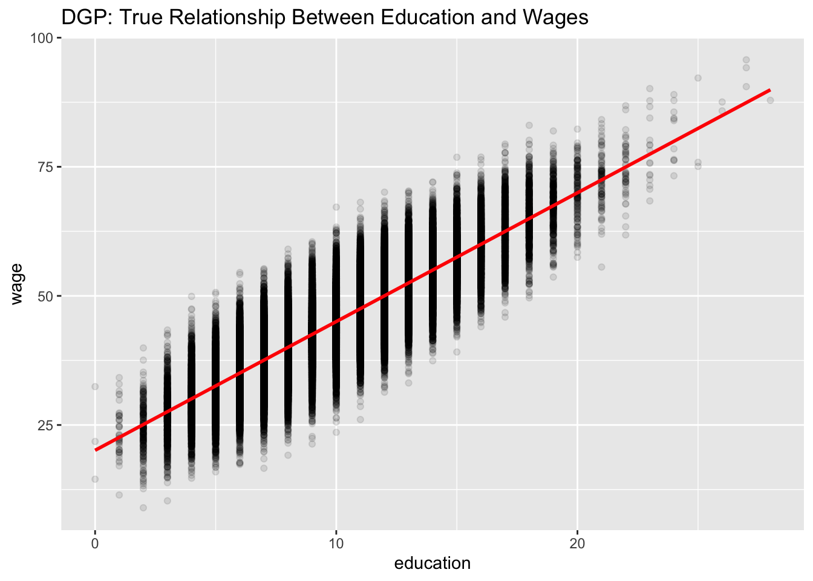
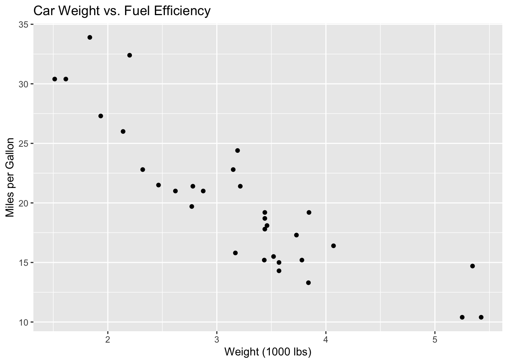
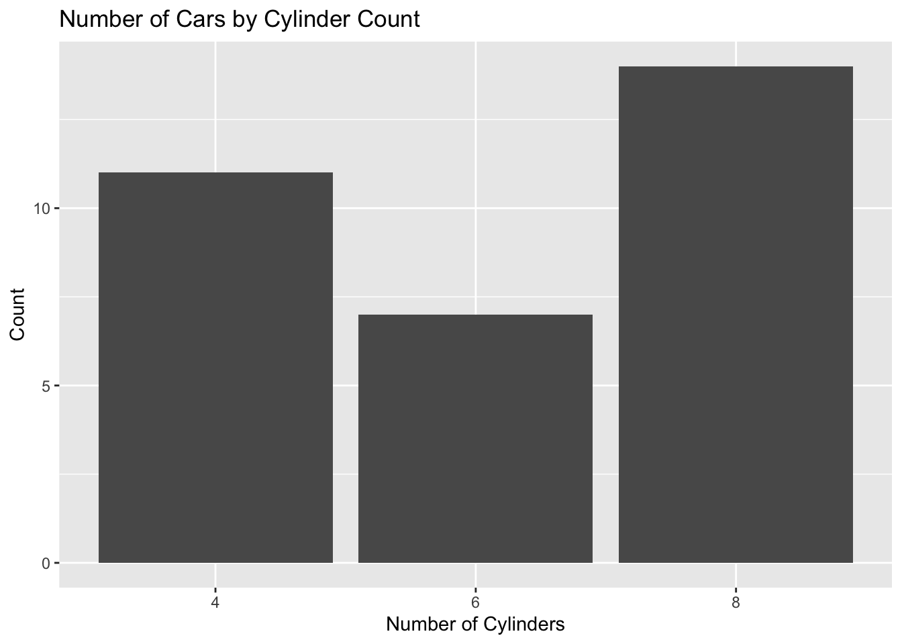
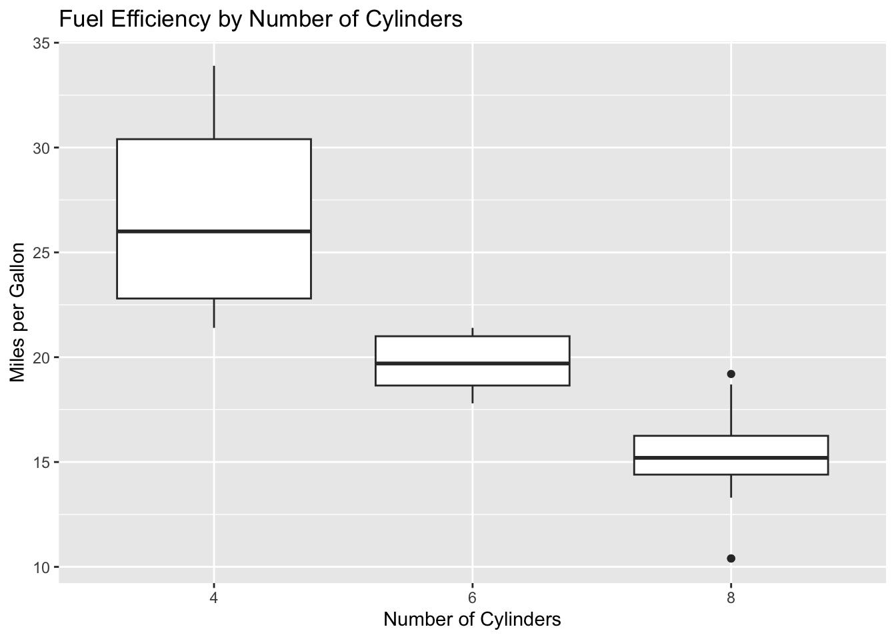

graph TD
A[Data Generating Process DGP]
B(Population)
C[Sample]
A -->|Generates| B
B -->|Sampled from| C
C -.->|Inference| B
C -.->|Inference| A
B -.->|Inference| A
classDef dgp fill:#f9f,stroke:#333,stroke-width:4px;
classDef pop fill:#bbf,stroke:#333,stroke-width:2px;
classDef sam fill:#bfb,stroke:#333,stroke-width:2px;
class A dgp;
class B pop;
class C sam;
1 Introduction to Data Science and Statistics for Social Sciences
1.1 What is Data Science?
Important
Statistics and Data Science are The Art and Science of Learning from Data.
Data science and statistics are powerful tools that help us understand complex phenomena across various social sciences, including political science, economics, and sociology. These complementary fields provide researchers and practitioners with the means to analyze trends, behaviors, and outcomes in society, offering insights that can shape policy and advance our understanding of human interaction.
Statistics provides the mathematical foundation for analyzing societal trends and outcomes, offering methods for designing studies, summarizing data, and making inferences. Data science expands on this foundation by incorporating computational methods and domain expertise to handle larger datasets and perform more complex analyses.
Together, these disciplines allow us to collect and process large datasets, visualize complex information, uncover patterns in social interactions, evaluate policy impacts, and support evidence-based decision-making. Their applications are vast and varied, from studying voting patterns and analyzing economic indicators to researching social inequalities and examining human behavior.
As our world becomes increasingly data-driven, the importance of data science and statistics in social sciences continues to grow.
Note
In social sciences, data science combines statistical methods, computational tools, and domain expertise to analyze complex social phenomena and human behavior.
1.2 The Relationship Between Statistics and Data Science
Statistics and data science are closely interrelated fields with significant overlap, especially in social sciences. Rather than strict divisions, it’s more accurate to view them as complementary approaches on a continuum:
- Rooted in mathematical theories and methods for data analysis
- Emphasizes statistical inference, hypothesis testing, and probability theory
- Historically central to social sciences for analyzing surveys, experiments, and observational studies
- Integrates statistical methods with computer science and domain expertise
- Expands focus to include machine learning, big data processing, and predictive modeling
- In social sciences, often tackles large-scale digital data and complex behavioral datasets
- Boundaries between statistics and data science are increasingly blurred
- Many techniques and tools are shared across both fields
- Social scientists often combine traditional statistical approaches with newer data science methods
- The choice of approach depends on research questions, data characteristics, and specific analytical needs
Data science can be seen as an evolution and expansion of traditional statistics, incorporating new technologies and methodologies to handle larger and more complex social science datasets.
1.3 Essential Concepts in Data Science and Statistics
1.3.2 Variables and Constants
Variables are characteristics that can take different values across a dataset. They can be:
Quantitative (numeric):
- Continuous: Height, weight, temperature
- Discrete: Number of children, count of errors in a program
Qualitative (categorical):
- Nominal: Blood type, eye color
- Ordinal: Education level, customer satisfaction rating
Constants are fixed values that remain unchanged throughout an analysis.
1.3.3 Population Parameters and Estimands
Population parameters are numerical characteristics of a population. Key points:
- They describe the entire population, not just a sample.
- They are usually denoted by Greek letters.
- In most cases, they cannot be directly calculated because we can’t measure the entire population.
- They are determined by the underlying Data Generating Process (DGP).
Common population parameters include:
- Population mean (\(\mu\)): The average value of a variable in the population.
- Population variance (\(\sigma^2\)): A measure of variability in the population.
- Population proportion (\(p\)): The proportion of individuals in the population with a certain characteristic.
An estimand is the target of estimation - the specific population parameter or function of parameters that we aim to estimate. It defines what we want to know about the population.
Example: Height of University Students
Consider the height of all university students in a country:
- \(\mu\) (estimand): The true average height of all university students (population mean)
- \(\sigma^2\) (estimand): The true variance of heights in the population
These parameters are unknown estimands that we aim to estimate using sample data.
1.3.4 Statistic(s) and Estimators
A statistic (singular) or sample statistic is any quantity computed from values in a sample, which is considered for a statistical purpose.
When a statistic is used for estimating an estimand (population parameter), it is called an estimator. Estimators are functions of sample data that provide approximate values for unknown population parameters.
Examples of statistics/estimators:
- Sample mean: \(\bar{x} = \frac{1}{n}\sum_{i=1}^n x_i\) (estimates \(\mu\))
- Sample variance: \(s^2 = \frac{1}{n-1}\sum_{i=1}^n (x_i - \bar{x})^2\) (estimates \(\sigma^2\))
- Sample proportion: \(\hat{p} = \frac{x}{n}\) (estimates \(p\))
1.3.5 Estimates
An estimate is the specific value obtained by applying an estimator to a particular sample. It is a point value that approximates the true estimand (population parameter).
Example: If we calculate a sample mean height of 68 inches from our data, then 68 inches is our estimate of the estimand \(\mu\) (population mean height).
1.3.6 Statistical Models
Note
A model in science is a simplified representation of a complex system or phenomenon. It’s designed to help us understand, explain, and make predictions about the real world. Models can take various forms, including mathematical equations, computer simulations, or conceptual frameworks. They allow scientists to focus on key aspects of a system while ignoring less relevant details, making complex problems more manageable and easier to study.
Statistical models represent relationships between variables and help in making predictions or inferences about estimands (population parameters).
Example: A linear regression model \(y = \beta_0 + \beta_1x + \epsilon\) describes the relationship between an independent variable \(x\) and a dependent variable \(y\), where:
- \(y\) is the dependent variable (e.g. quantity demanded)
- \(x\) is the independent variable (e.g. price, income level of the consumer)
- \(\beta_0\) and \(\beta_1\) are parameters, estimands to be estimated
- \(\epsilon\) is the error term, representing unexplained variation
I’ll help you create a callout note about causal inference and counterfactuals for Quarto.
Causal Inference and Counterfactuals
In social sciences, we often want to understand what would have happened if we had done something differently - this hypothetical scenario is called a counterfactual. For instance:
- What would a person’s income be if they had attended college vs. if they hadn’t?
- How would voter turnout change if voting was mandatory?
Since we can’t observe both scenarios simultaneously, statistical models help us estimate these counterfactuals by: 1. Controlling for confounding variables 2. Comparing similar groups that differ only in the treatment 3. Using techniques like propensity score matching or instrumental variables
Remember: Correlation ≠ Causation, but careful research design and statistical methods can help us make causal claims.


This creates a note-type callout in Quarto that explains the concept succinctly while highlighting key points about counterfactuals and their estimation.
1.3.7 Inference
Statistical inference is the process of drawing conclusions about estimands (population parameters) based on sample data. It involves two main types:
- Estimation: Using sample statistics (estimators) to estimate estimands (population parameters)
- Hypothesis testing: Making decisions about estimands based on sample evidence
Estimation and Hypothesis Testing
- Estimation
Estimation is about determining the likely value of a population parameter based on sample data. In the context of a binomial distribution, we might be interested in estimating the probability of success (p) for a certain event.
Example: Coin Flipping
Let’s say we’re flipping a coin 100 times and want to estimate the probability of getting heads.
- We flip the coin 100 times and observe 55 heads.
- Our point estimate for p (probability of heads) would be 55/100 = 0.55
- We might also calculate a confidence interval, e.g., a 95% confidence interval might be (0.45, 0.65).
The confidence interval tells us a range where we think the true probability might lie. In plain English, this means: “We’re 95% confident that the true probability of getting heads is between 45% and 65%.”
The goal here is to provide our best guess of the true probability of heads, along with a range of plausible values.
Important Concepts in Estimation:
- Bias
Bias refers to the tendency of an estimator to systematically overestimate or underestimate the true value of a population parameter (estimand).
- An unbiased estimator is one whose average value (when estimation is repeated multiple times) equals the true value of the parameter.
- Bias can be understood as the difference between the average value of the estimator and the true value of the parameter.
- Efficiency
Efficiency refers to the precision of an estimator. A more efficient estimator produces results closer to the true parameter value, i.e., it has less dispersion in its results.
- It is most often measured by the variance of the estimator (lower variance means higher efficiency)
- For unbiased estimators, efficiency is often compared using Mean Squared Error (MSE)
- Hypothesis Testing
Hypothesis testing, on the other hand, is about making a decision between two competing claims about a population parameter. We typically have a null hypothesis (H0) and an alternative hypothesis (H1).
Example: Is the Coin Fair?
Using the same coin-flipping scenario, let’s say we want to test if the coin is fair (p = 0.5) or biased towards heads (p > 0.5).
- Null hypothesis (H0): p = 0.5 (the coin is fair)
- Alternative hypothesis (H1): p > 0.5 (the coin is biased towards heads)
- We observe 55 heads out of 100 flips
Introducing p-values and “Probabilistic Proof by Contradiction”
Now, let’s dive into the concept of p-values and how hypothesis testing works as a kind of “probabilistic proof by contradiction”:
We start by assuming the null hypothesis (H0) is true. In this case, we assume the coin is fair.
We then ask: “If the coin were truly fair, how likely would it be to observe 55 or more heads out of 100 flips?”
This probability is called the p-value. It’s the probability of observing our data (or more extreme data) assuming the null hypothesis is true.
If this probability (the p-value) is very small, we have a contradiction: we’ve observed something that should be very rare if our assumption (H0) were true.
We typically set a threshold called the significance level (often 0.05 or 5%) for what we consider “very small.”
If the p-value is less than our chosen significance level, we reject H0. We conclude that our observation is too unlikely under H0, so we favor the alternative hypothesis instead.
If the p-value is greater than our significance level, we fail to reject H0. We don’t have enough evidence to conclude the coin is biased.
This process is like a “probabilistic proof by contradiction” because:
- We start by assuming H0 (like assuming the opposite of what we want to prove in a proof by contradiction).
- We see if this assumption leads to a very unlikely situation (our observed data).
- If it does, we reject the assumption (H0) and favor the alternative.
The p-value quantifies exactly how unlikely our observation is under H0. A very small p-value (like 0.01) means: “If H0 were true, we’d only expect to see data this extreme about 1% of the time.”
Hypothesis testing and estimation are related but distinct statistical procedures; hypothesis testing can be used to make inferences about estimates and can complement estimation in several ways, e.g.:
- Testing Point Estimates: Hypothesis testing can be used to evaluate whether a point estimate is significantly different from a hypothesized value. For example, if we estimate that a coin has a 0.55 probability of landing heads, we could use a hypothesis test to determine if this is significantly different from 0.5 (a fair coin).
- Parameter Significance: In multivariate models, hypothesis tests (like t-tests in regression) can help determine which estimated parameters are significantly different from zero, providing insight into which variables are important in the model.
1.3.8 Relationships Between Concepts
- The Data Generating Process (DGP) determines the actual values of population parameters (estimands).
- Estimands are estimated using statistics calculated from the sample (estimators).
- The quality of estimators is assessed based on properties such as bias and efficiency in estimating the estimand.
- Statistical models use estimated parameters to describe relationships between variables in the population.
- Statistical inference involves drawing conclusions about estimands based on sample data, utilizing the properties of estimators.
Example: Studying Voting Behavior
- Population: All eligible voters in a country
- Estimand: \(p\) = true proportion of voters supporting a given candidate
- Sample: 1000 randomly selected eligible voters
- Estimator: \(\hat{p}\) = proportion of voters in the sample supporting the candidate
- Estimate: Specific value of \(\hat{p}\) calculated from the sample (e.g., 0.52)
- DGP: Complex interaction of factors influencing voting decisions, such as political beliefs, economic conditions, media exposure, and social networks.
Understanding the DGP helps researchers interpret why the estimand \(p\) has a certain value and how it might change over time. For example, a sudden change in the economy might affect voters’ preferences, thereby changing the value of \(p\).
Bias and efficiency in the context of the example:
- If \(\hat{p}\) is an unbiased estimator, it means that when the survey is repeated multiple times with different samples, the average value of \(\hat{p}\) will be close to the true value of \(p\).
- The efficiency of \(\hat{p}\) determines how dispersed the results of individual surveys are around this average. The less dispersion, the more efficient the estimator.
1.4 Core Components of Data Science in Scientific Research
- Experimental methods: Controlled studies where researchers manipulate variables to observe effects
- Observational studies: Gathering data by watching and recording without interfering
- Surveys and interviews: Collecting information directly from people through questions
- Digital data collection: Gathering data from online sources, sensors, or computer systems
- Ethical considerations: Ensuring research respects participants’ rights and well-being
- Data cleaning: Removing errors and inconsistencies from raw data
- Handling missing values: Addressing gaps in the dataset that could affect analysis
- Data transformation: Converting data into formats suitable for analysis, like changing text to numbers
- Descriptive statistics: Summarizing data with measures like mean, median, and standard deviation
- Data visualization: Creating graphs and charts to visually represent data patterns
- Pattern identification: Discovering trends or relationships in the data
- Hypothesis testing: Using data to evaluate claims about populations
- Regression analysis: Examining relationships between variables and making predictions
- Causal inference: Determining if one variable directly influences another
- Supervised learning: Training models to predict outcomes using data with known answers
- Unsupervised learning: Finding hidden patterns in data without predefined categories
- Natural Language Processing (NLP): Teaching computers to understand and analyze human language
- Effective visualizations: Creating clear, informative graphics to represent complex data
- Science communication: Explaining findings to different audiences, from experts to the public
- Scientific writing: Preparing research papers and reports to share results
- Version control: Tracking changes in data and code throughout the research process
- Open data practices: Sharing research data and methods for verification and further study
- Reproducible workflows: Documenting research steps so others can repeat the study
1.6 Causal Inference vs. Observational Studies
In social sciences and beyond, understanding the relationship between variables is crucial. Two key approaches to this are causal inference and observational studies, each with its own strengths and limitations.
- Aims to establish cause-and-effect relationships
- Often involves experimental designs or advanced statistical techniques
- Seeks to answer “What if?” questions and determine the impact of interventions
- Examples: Randomized controlled trials, quasi-experimental designs, instrumental variables
- Examine relationships between variables without direct intervention
- Rely on data collected from natural settings or existing datasets
- Can identify correlations and patterns but struggle to establish causation
- Examples: Cohort studies, case-control studies, cross-sectional surveys
Remember: Correlation Does Not Imply Causation
A fundamental principle in research is that correlation between two variables does not necessarily imply a causal relationship. This concept is crucial when interpreting results from observational studies.
- Correlation: Measures the strength and direction of a relationship between variables
- Causation: Indicates that changes in one variable directly cause changes in another
While strong correlations can suggest potential causal links, additional evidence and rigorous methods are required to establish causality.
- Confounding variables: Unmeasured factors that affect both the presumed cause and effect
- Reverse causality: The presumed effect might actually be causing the presumed cause
- Selection bias: Non-random selection of subjects into study groups
- Randomized controlled trials (when ethical and feasible)
- Natural experiments or quasi-experimental designs
- Propensity score matching
- Difference-in-differences analysis
- Instrumental variable approaches
- Directed acyclic graphs (DAGs) for visualizing causal relationships
Understanding the distinction between causal inference and observational studies is crucial in social sciences, where ethical considerations often limit experimental manipulation. Researchers must carefully design studies and interpret results to avoid misleading conclusions about causality.
1.7 Models in Science: From Deterministic to Stochastic (*)
Models are essential tools in scientific research, helping scientists to represent, understand, and predict complex phenomena. This section explores the main types of models used in science, along with examples of their applications. It’s important to note that these categories often overlap, and many scientific models incorporate multiple aspects.
1.7.1 Mathematical Models
Mathematical models use equations and mathematical concepts to describe and analyze systems or phenomena. They can be further divided into several subcategories, though it’s important to note that some complex models may incorporate elements from multiple categories:
1.7.1.1 a. Deterministic Models
Deterministic models provide precise predictions based on a set of variables, without incorporating randomness at the macroscopic level.
Example: Newton’s laws of motion, which can precisely predict the motion of objects under known forces in classical mechanics.
1.7.1.2 b. Stochastic Models
Stochastic models incorporate randomness and probability. However, it’s crucial to distinguish between two fundamentally different types of stochastic models:
1.7.1.2.1 i. Classical Stochastic Models
These models deal with randomness arising from incomplete information or complex interactions in classical systems. The underlying system is deterministic, but practical limitations in measurement or computation lead to the use of probabilistic descriptions.
Example: Regression models in statistics, where the randomness represents unexplained variation or measurement error:
\[y = β_0 + β_1x + ε\]
Where:
- \(y\) is the dependent variable (e.g. quantity demanded)
- \(x\) is the independent variable (e.g. price, income level of the consumer)
- \(β_0\) and \(β_1\) are parameters
- \(ε\) is the error term, representing unexplained variation
1.7.1.2.2 ii. Quantum Stochastic Models
These models deal with the fundamental, irreducible randomness inherent in quantum mechanical systems. This randomness is not due to lack of information, but is a core feature of quantum reality.
Example: The Standard Model in particle physics, which describes particle interactions using quantum field theory. For instance, the decay of a particle is inherently probabilistic:
\[P(t) = e^{-t/τ}\]
Where:
- \(P(t)\) is the probability that the particle has not decayed after time t
- \(τ\) is the mean lifetime of the particle
1.7.1.3 c. Computer Simulation Models
Computer simulations use algorithms and computational methods based on mathematical models to simulate complex systems and predict their behavior over time. These can be deterministic or stochastic.
Example: Climate models that simulate the Earth’s climate system, incorporating factors such as atmospheric composition, ocean currents, and solar radiation to project future climate scenarios.
1.7.2 Conceptual Models
Conceptual models are abstract representations of systems or processes, often using diagrams or flowcharts to illustrate relationships between components.
Example: The water cycle model in Earth sciences, which illustrates the continuous movement of water within the Earth and atmosphere through processes such as evaporation, precipitation, and runoff.
1.7.3 Physical Models
Physical models are tangible representations of objects or systems, often scaled down or simplified versions of the real thing.
Example: Wind tunnel models in aerodynamics research, used to study the effects of air moving past solid objects and optimize designs for aircraft, vehicles, or buildings.
1.7.4 Theoretical Models
Theoretical models are abstract frameworks based on fundamental principles and hypotheses, often used to explain observed phenomena or predict new ones. These models frequently employ mathematical formulations and can be deterministic or stochastic in nature.
Example: The theory of evolution by natural selection, which provides a framework for understanding the diversity and adaptation of life forms over time.
1.7.5 Conclusion
These various forms of models play crucial roles in scientific research, each offering unique advantages for understanding and predicting natural phenomena. Scientists often use multiple types of models in conjunction to gain comprehensive insights into complex systems and processes.
It’s important to recognize that these categories are not mutually exclusive and often overlap:
- Mathematical models form the foundation for many other types of models, including computer simulations and some theoretical models.
- Computer simulation models are essentially mathematical models implemented through computational methods, and can be either deterministic or stochastic.
- Theoretical models often employ mathematical formulations and may be implemented as computer simulations.
- Physical models may be designed based on mathematical models and can be used to validate computer simulations.
The choice of model type often depends on the specific research question, the nature of the system being studied, the available data, and the computational resources at hand. As science progresses, the boundaries between these model types continue to blur, leading to increasingly sophisticated and interdisciplinary approaches to modeling complex phenomena.
It’s crucial to distinguish between different types of stochastic models. Classical stochastic models, such as those used in regression analysis, deal with randomness arising from incomplete information or complex interactions in otherwise deterministic systems. In contrast, quantum stochastic models, like those in particle physics, deal with fundamental, irreducible randomness inherent in quantum mechanical systems. This distinction reflects the profound differences between classical and quantum paradigms in physics and highlights the diverse ways in which probability is used in scientific modeling.
1.8 Understanding Spurious Correlations, Confounders, and Colliders (*)
In this tutorial, we’ll explore three important concepts in statistical analysis: spurious correlations, confounders, and colliders. Understanding these concepts is crucial for avoiding misinterpretation of data and drawing incorrect conclusions from statistical analyses.
Let’s start by loading the necessary libraries:
library(tidyverse)
library(dagitty)
library(ggdag)
set.seed(123) # for reproducibility1.8.1 Spurious Correlations
Spurious correlations are relationships between variables that appear to be causal but are actually coincidental or caused by an unseen third factor.
1.8.2 Example: Ice Cream Sales and Drowning Incidents
Let’s create a dataset that shows a spurious correlation between ice cream sales and drowning incidents:
n <- 100
spurious_data <- tibble(
temperature = rnorm(n, mean = 25, sd = 5),
ice_cream_sales = 100 + 5 * temperature + rnorm(n, sd = 10),
drowning_incidents = 1 + 0.5 * temperature + rnorm(n, sd = 2)
)
ggplot(spurious_data, aes(x = ice_cream_sales, y = drowning_incidents)) +
geom_point() +
geom_smooth(method = "lm", se = FALSE) +
labs(title = "Spurious Correlation: Ice Cream Sales vs. Drowning Incidents",
x = "Ice Cream Sales", y = "Drowning Incidents")`geom_smooth()` using formula = 'y ~ x'
This plot shows a positive correlation between ice cream sales and drowning incidents. However, this relationship is spurious. The real cause for both is the temperature:
ggplot(spurious_data, aes(x = temperature)) +
geom_point(aes(y = ice_cream_sales), color = "blue") +
geom_point(aes(y = drowning_incidents * 10), color = "red") +
geom_smooth(aes(y = ice_cream_sales), method = "lm", se = FALSE, color = "blue") +
geom_smooth(aes(y = drowning_incidents * 10), method = "lm", se = FALSE, color = "red") +
scale_y_continuous(
name = "Ice Cream Sales",
sec.axis = sec_axis(~./10, name = "Drowning Incidents")
) +
labs(title = "Temperature as the Common Cause",
x = "Temperature")`geom_smooth()` using formula = 'y ~ x'
`geom_smooth()` using formula = 'y ~ x'
1.8.3 Confounders
A confounder is a variable that influences both the dependent variable and independent variable, causing a spurious association.
1.8.4 Example: Education, Income, and Age
library(tidyverse)
library(viridis)Loading required package: viridisLiten <- 1000
confounder_data <- tibble(
age = runif(n, 25, 65),
education = round(10 + 0.1 * age + rnorm(n, sd = 2)),
income = 20000 + 1000 * education + 500 * age + rnorm(n, sd = 5000)
)
# Without controlling for age
model_naive <- lm(income ~ education, data = confounder_data)
# Controlling for age
model_adjusted <- lm(income ~ education + age, data = confounder_data)
# Create age groups for visualization
confounder_data <- confounder_data %>%
mutate(age_group = cut(age, breaks = 3, labels = c("Young", "Middle", "Old")))
# Visualize
ggplot(confounder_data, aes(x = education, y = income)) +
geom_point(aes(color = age), alpha = 0.5) +
geom_smooth(method = "lm", se = FALSE, color = "red", linewidth = 1.2) +
geom_smooth(aes(group = age_group, color = as.numeric(age_group)),
method = "lm", se = FALSE, linewidth = 1) +
scale_color_viridis_c(name = "Age",
breaks = c(30, 45, 60),
labels = c("Young", "Middle", "Old")) +
labs(title = "Education vs Income, Confounded by Age",
x = "Years of Education", y = "Income") +
theme_minimal()`geom_smooth()` using formula = 'y ~ x'`geom_smooth()` using formula = 'y ~ x'
Compare the coefficients:
summary(model_naive)$coefficients["education", "Estimate"][1] 2328.718summary(model_adjusted)$coefficients["education", "Estimate"][1] 1101.783The effect of education on income is overestimated when we don’t control for age.
1.8.5 Colliders
A collider is a variable that is influenced by both the independent variable and the dependent variable. Controlling for a collider can introduce a spurious correlation.
1.8.6 Example: Job Satisfaction, Salary, and Work-Life Balance
Let’s create a dataset where work-life balance is a collider between job satisfaction and salary:
n <- 1000
collider_data <- tibble(
job_satisfaction = rnorm(n),
salary = rnorm(n),
work_life_balance = -0.5 * job_satisfaction - 0.5 * salary + rnorm(n, sd = 0.5)
)
# Without controlling for work-life balance
model_correct <- lm(salary ~ job_satisfaction, data = collider_data)
# Incorrectly controlling for work-life balance
model_collider <- lm(salary ~ job_satisfaction + work_life_balance, data = collider_data)
# Visualize
ggplot(collider_data, aes(x = job_satisfaction, y = salary, color = work_life_balance)) +
geom_point(alpha = 0.5) +
geom_smooth(method = "lm", se = FALSE, color = "red") +
scale_color_viridis_c() +
labs(title = "Job Satisfaction vs Salary, Work-Life Balance as Collider",
x = "Job Satisfaction", y = "Salary")`geom_smooth()` using formula = 'y ~ x'
Compare the coefficients:
summary(model_correct)$coefficients["job_satisfaction", "Estimate"][1] 0.02063487summary(model_collider)$coefficients["job_satisfaction", "Estimate"][1] -0.4794016Controlling for the collider (work-life balance) introduces a spurious correlation between job satisfaction and salary.
1.8.7 Conclusion
Understanding spurious correlations, confounders, and colliders is crucial for proper statistical analysis and causal inference. Always consider the underlying causal structure of your data and be cautious about which variables you control for in your analyses.
1.9 Further Reading
- Pearl, J. (2009). Causality: Models, Reasoning, and Inference. Cambridge University Press.
- Hernán, M. A., & Robins, J. M. (2020). Causal Inference: What If. Boca Raton: Chapman & Hall/CRC.
1.11 Appendix A: Classical vs Quantum Randomness: Understanding the Fundamental Differences
To understand how the randomness in quantum mechanics differs from the randomness represented by the error term in regression models, we need to examine their origins, nature, and implications.
1.11.1 Origin of Randomness
1.11.1.1 Classical Randomness (Regression Models)
- Source: Incomplete information or complex interactions in an otherwise deterministic system.
- Nature: Epistemic uncertainty (due to lack of knowledge).
- Example: In a regression model, \(y = β_0 + β_1x + ε\), the error term ε represents unexplained variation.
1.11.1.2 Quantum Randomness
- Source: Fundamental property of quantum systems.
- Nature: Ontic uncertainty (inherent to the system, not due to lack of knowledge).
- Example: The exact time of decay of a radioactive atom cannot be predicted, only its probability.
1.11.2 Philosophical Implications
1.11.2.1 Classical Randomness
- Determinism: Underlying reality is deterministic; randomness reflects our ignorance.
- Hidden Variables: In principle, if we had complete information, we could predict outcomes precisely.
1.11.2.2 Quantum Randomness
- Indeterminism: Randomness is a fundamental feature of reality, not just our description of it.
- No Hidden Variables: Even with complete information about a quantum system, some outcomes remain unpredictable (as suggested by Bell’s theorem).
1.11.3 Mathematical Treatment
1.11.3.1 Classical Randomness
- Probability Theory: Based on classical probability theory.
- Distribution: Often assumed to follow known distributions (e.g., normal distribution in many regression models).
- Central Limit Theorem: Applies to large samples of random variables.
1.11.3.2 Quantum Randomness
- Quantum Probability: Based on the mathematical framework of quantum mechanics.
- Wave Function: Describes the quantum state and its evolution.
- Born Rule: Gives probabilities of measurement outcomes from the wave function.
1.11.4 Predictability and Control
1.11.4.1 Classical Randomness
- Reducible: In principle, can be reduced by gathering more data or improving measurement precision.
- Controllable: Systematic errors can be identified and corrected.
1.11.4.2 Quantum Randomness
- Irreducible: Cannot be eliminated even with perfect measurements.
- Fundamentally Uncontrollable: The act of measurement itself affects the system (measurement problem).
1.11.5 Practical Implications
1.11.5.1 Classical Randomness
- Error Reduction: Focus on improving measurement techniques and data collection.
- Model Refinement: Aim to explain more variance and reduce the error term.
1.11.5.2 Quantum Randomness
- Inherent Limitation: Accept fundamental limits on predictability.
- Probabilistic Predictions: Focus on accurate probability distributions rather than exact outcomes.
1.11.6 Examples to Understand the Difference
1.11.6.1 Classical Randomness Example
Imagine flipping a coin. Classical physics says the outcome is determined by initial conditions (force applied, air resistance, etc.). The “randomness” comes from our inability to precisely measure and account for all these factors.
1.11.6.2 Quantum Randomness Example
In the double-slit experiment, individual particles show interference patterns as if they went through both slits simultaneously. The exact path of any individual particle is fundamentally undetermined until measured, and this indeterminacy cannot be resolved by more precise measurements.
1.11.7 Conclusion
While both types of randomness lead to probabilistic predictions, their fundamental natures are quite different:
- Classical randomness in regression models is a reflection of our incomplete knowledge or measurement limitations in an otherwise deterministic system.
- Quantum randomness is a fundamental property of quantum systems, representing an inherent indeterminacy in nature that persists even with perfect knowledge and measurement.
Understanding these differences is crucial for correctly interpreting and applying statistical models in different scientific contexts, from social sciences using regression analysis to quantum physics experiments.
1.12 Appendix B: Large Language Models - Understanding Their Stochastic Nature
Large Language Models (LLMs) like GPT-3, BERT, and Claude have revolutionized natural language processing but can make puzzling mistakes, especially in mathematical tasks. This appendix explains LLMs’ functioning, stochastic nature, and compares them to classical statistical models.
1.12.1 LLM Basics and Stochastic Nature
LLMs are trained on vast text data to predict the probability distribution of the next token in a sequence. They use transformer architectures for processing and generating text. Key aspects of their stochastic nature include:
- Probabilistic token selection: LLMs choose each word based on calculated probabilities, not fixed rules.
- Temperature-controlled randomness: A “temperature” parameter adjusts the randomness of selections, balancing creativity and coherence.
- Non-deterministic outputs: The same input can produce different outputs in separate runs.
- Contextual ambiguity: LLMs interpret context probabilistically, sometimes leading to misunderstandings.
1.12.2 Comparison to Classical Statistical Models
To understand LLMs better, let’s compare them to Ordinary Least Squares (OLS) regression:
| Aspect | OLS Regression | Large Language Models |
|---|---|---|
| Basic Function | Predicts continuous outcomes based on input variables | Predicts probability distribution of next token based on previous tokens |
| Input-Output | Continuous variables, linear relationships | Discrete tokens, non-linear relationships |
| Prediction Type | Point predictions with confidence intervals | Probability distributions over possible tokens |
| Model Complexity | Few parameters | Billions of parameters |
| Interpretability | Clear coefficient interpretations | Largely opaque internal workings |
| Noise Handling | Assumes random noise in outcome variable | Deals with natural language variability |
| Extrapolation | Less reliable outside training range | Less reliable on unfamiliar topics |
Both models aim to learn input-output mappings based on training data patterns.
1.12.3 Implications for Mathematical Tasks
LLMs’ stochastic nature affects mathematical operations:
- Variable outputs for repeated calculations: Each attempt might yield a different result due to probabilistic token selection.
- Confidence doesn’t guarantee correctness: High model confidence can occur even for incorrect answers.
- Approximation rather than exact computation: LLMs pattern-match rather than perform precise calculations.
Limitations in mathematical tasks stem from:
- Training objective mismatch: LLMs are trained for language prediction, not mathematical accuracy.
- Lack of explicit mathematical reasoning: They don’t have built-in mathematical rules or operations.
- Absence of working memory: LLMs can’t reliably store and manipulate intermediate results.
- Limited context window: They may lose track of relevant information in long problems.
- Training data limitations: Underrepresentation of certain math concepts can lead to poor performance.
- Lack of consistency checks: LLMs don’t verify the logical consistency of their outputs.
1.12.4 Best Practices and Conclusion
When using LLMs for mathematical tasks:
- Focus on conceptual explanations, not precise calculations: LLMs excel at explaining concepts but may falter on exact computations.
- Verify results with dedicated software: Always double-check LLM calculations with proper math tools.
- Break down complex problems: Splitting tasks into smaller steps can improve LLM performance.
- Be aware of rephrasing effects: Different phrasings of the same problem may yield different results.
- Use as assistive tools, not replacements for expertise: LLMs should complement, not substitute, mathematical expertise.
Understanding LLMs’ probabilistic nature helps leverage their strengths in language tasks while recognizing their limitations in domains requiring deterministic precision, like mathematics.
1.13 Appendix C: Deterministic and Stochastic Models (*)
1.13.1 Deterministic Models
Deterministic models are those where the output is fully determined by the parameter values and the initial conditions. These models are often used in physics and engineering.
1.13.2 Example: Uniformly Accelerated Motion
A classic example of a deterministic model is uniformly accelerated motion, described by the equation:
\[x(t) = x_0 + v_0t + \frac{1}{2}at^2\]
Where:
- \(x(t)\) is the position at time \(t\)
- \(x_0\) is the initial position
- \(v_0\) is the initial velocity
- \(a\) is the acceleration
- \(t\) is time
Let’s simulate this in R:
# Uniformly accelerated motion
simulate_accelerated_motion <- function(x0, v0, a, t) {
x0 + v0 * t + 0.5 * a * t^2
}
# Generating data
t <- seq(0, 10, by = 0.1)
x <- simulate_accelerated_motion(x0 = 0, v0 = 2, a = 1, t = t)
# Plot
plot(t, x, type = "l", xlab = "Time", ylab = "Position",
main = "Uniformly Accelerated Motion")
This code will generate a plot of uniformly accelerated motion, which is an intuitive example from Newtonian dynamics. In this case, an object starts moving with an initial velocity and accelerates uniformly, resulting in a parabolic trajectory on the position-time graph.
1.13.4 Example: Ordinary Least Squares (OLS) Regression
OLS is a fundamental stochastic model in social sciences. It’s represented as:
\[Y = \beta_0 + \beta_1X + \epsilon\]
Where:
- \(Y\) is the dependent variable
- \(X\) is the independent variable
- \(\beta_0\) and \(\beta_1\) are parameters
- \(\epsilon\) is the error term (stochastic component)
Let’s demonstrate OLS in R:
# Generate some sample data
set.seed(123)
X <- rnorm(100)
Y <- 2 + 3*X + rnorm(100, sd = 0.5)
# Fit OLS model
model <- lm(Y ~ X)
# Summary of the model
summary(model)
Call:
lm(formula = Y ~ X)
Residuals:
Min 1Q Median 3Q Max
-0.95367 -0.34175 -0.04375 0.29032 1.64520
Coefficients:
Estimate Std. Error t value Pr(>|t|)
(Intercept) 1.94860 0.04878 39.95 <2e-16 ***
X 2.97376 0.05344 55.65 <2e-16 ***
---
Signif. codes: 0 '***' 0.001 '**' 0.01 '*' 0.05 '.' 0.1 ' ' 1
Residual standard error: 0.4854 on 98 degrees of freedom
Multiple R-squared: 0.9693, Adjusted R-squared: 0.969
F-statistic: 3097 on 1 and 98 DF, p-value: < 2.2e-16# Plot
plot(X, Y, main = "OLS Regression")
abline(model, col = "red")
This will fit an OLS model to some simulated data and plot the results.

1.13.5 Advanced Stochastic Models: Large Language Models
Large Language Models (LLMs) like GPT-3 are complex stochastic models used in natural language processing. While we can’t implement a full LLM in this tutorial, we can discuss its principles.
LLMs are based on the transformer architecture and use self-attention mechanisms. They’re trained on vast amounts of text data and learn to predict the next token in a sequence.
The core of an LLM can be thought of as a conditional probability distribution:
\[P(x_t | x_{<t}, \theta)\]
Where: - \(x_t\) is the current token - \(x_{<t}\) represents all previous tokens - \(\theta\) are the model parameters
Note
Tokens in Large Language Models (LLMs) are the basic units of text that the model processes. They can be thought of as pieces of words or punctuation marks. Here are key points about tokens:
Definition: Tokens are the smallest units of text that an LLM processes. They can be whole words, parts of words, or even individual characters or punctuation marks. Tokenization: The process of breaking text into tokens is called tokenization. LLMs use specific algorithms to perform this task. Examples:
The word “cat” might be a single token. A longer word like “understanding” might be broken into multiple tokens, e.g., “under” and “standing”. Punctuation marks like “.” or “?” are often individual tokens. Common prefixes or suffixes might be their own tokens.
Vocabulary: LLMs have a fixed vocabulary of tokens they recognize. This vocabulary typically ranges from tens of thousands to hundreds of thousands of tokens. Significance: The way text is tokenized can affect how the model understands and generates language. It’s particularly important for handling different languages, rare words, or specialized vocabulary. Context: In the equation for LLMs: \[P(x_t | x_{<t}, \theta)\] Where:
\(x_t\) represents the current token \(x_{<t}\) represents all previous tokens in the sequence \(\theta\) represents the model parameters
Unlike deterministic models, LLMs produce different outputs even for the same input due to their stochastic nature.
1.13.6 Conclusion
We’ve explored a range of models from deterministic to highly complex stochastic ones. Each type of model has its place in science, depending on the system being studied and the level of uncertainty involved.
Remember, the choice between deterministic and stochastic models often depends on the nature of the system you’re studying and the questions you’re trying to answer. Deterministic models are great for systems with well-understood mechanics, while stochastic models shine when dealing with inherent randomness or complex, not fully understood systems.
1.14 Appendix D: Introduction to R, RStudio, and tidyverse
R is a powerful programming language and environment for statistical computing and graphics. It’s widely used in academia, especially in fields like social sciences, for data analysis and visualization.
1.14.0.1 Key features of R:
- Open-source and free
- Extensive package ecosystem
- Strong community support
- Excellent for statistical analysis and data visualization
1.14.1 Getting Started with RStudio
RStudio is an Integrated Development Environment (IDE) for R that makes it easier to work with R.
1.14.1.1 Installing R and RStudio
- Download and install R from CRAN
- Download and install RStudio from RStudio’s website
1.14.1.2 RStudio Interface
RStudio has four main panes:
- Source Editor: Where you write and edit your R scripts
- Console: Where you can type R commands and see output
- Environment/History: Shows all objects in your workspace and command history
- Files/Plots/Packages/Help: Multipurpose pane for file management, viewing plots, managing packages, and accessing help
1.14.1.3 Basic RStudio Features
- Creating a new R script: File > New File > R Script
- Running code: Select code and press Ctrl+Enter (Cmd+Enter on Mac)
- Installing packages: Tools > Install Packages
- Getting help: Type
?function_namein the console
1.14.2 R Basics
1.14.2.1 Data Types in R
# Numeric
x <- 10.5
class(x)[1] "numeric"# Integer
y <- 1L
class(y)[1] "integer"# Character
name <- "Alice"
class(name)[1] "character"# Logical
is_student <- TRUE
class(is_student)[1] "logical"1.14.2.2 Data Structures
1.14.2.2.1 Vectors
# Create a vector
numbers <- c(1, 2, 3, 4, 5)
fruits <- c("apple", "banana", "cherry")
# Vector operations
numbers + 2[1] 3 4 5 6 7numbers * 2[1] 2 4 6 8 10mean(numbers)[1] 3length(fruits)[1] 31.14.2.2.2 Matrices
# Create a matrix
m <- matrix(1:6, nrow = 2, ncol = 3)
print(m) [,1] [,2] [,3]
[1,] 1 3 5
[2,] 2 4 6# Matrix operations
t(m) # transpose [,1] [,2]
[1,] 1 2
[2,] 3 4
[3,] 5 6m * 2 # scalar multiplication [,1] [,2] [,3]
[1,] 2 6 10
[2,] 4 8 121.14.2.2.3 Data Frames
# Create a data frame
df <- data.frame(
name = c("Alice", "Bob", "Charlie"),
age = c(25, 30, 35),
student = c(TRUE, FALSE, TRUE)
)
print(df) name age student
1 Alice 25 TRUE
2 Bob 30 FALSE
3 Charlie 35 TRUE# Accessing data frame elements
df$name[1] "Alice" "Bob" "Charlie"df[1, 2][1] 25df[df$age > 25, ] name age student
2 Bob 30 FALSE
3 Charlie 35 TRUE1.14.2.3 Functions
# Define a function
greet <- function(name) {
paste("Hello,", name, "!")
}
# Use the function
greet("Alice")[1] "Hello, Alice !"# Function with multiple arguments
calculate_bmi <- function(weight, height) {
bmi <- weight / (height^2)
return(bmi)
}
calculate_bmi(70, 1.75)[1] 22.857141.14.2.4 Control Structures
# If-else statement
x <- 10
if (x > 5) {
print("x is greater than 5")
} else {
print("x is not greater than 5")
}[1] "x is greater than 5"# For loop
for (i in 1:5) {
print(paste("Iteration", i))
}[1] "Iteration 1"
[1] "Iteration 2"
[1] "Iteration 3"
[1] "Iteration 4"
[1] "Iteration 5"# While loop
counter <- 1
while (counter <= 5) {
print(paste("Counter:", counter))
counter <- counter + 1
}[1] "Counter: 1"
[1] "Counter: 2"
[1] "Counter: 3"
[1] "Counter: 4"
[1] "Counter: 5"1.14.3 Introduction to tidyverse
The tidyverse is a collection of R packages designed for data science. These packages share a common philosophy and are designed to work together seamlessly.
1.14.3.1 Key tidyverse Packages
- ggplot2: for data visualization
- dplyr: for data manipulation
- tidyr: for tidying data
- readr: for reading rectangular data
- purrr: for functional programming
- tibble: modern reimagining of data frames
1.14.3.2 Getting Started with tidyverse
# Install tidyverse (run once)
# install.packages("tidyverse")
# Load tidyverse
library(tidyverse)1.14.3.3 Data Import with readr
# Reading CSV files
data <- read_csv("social_data.csv")
# Reading other file formats
read_tsv("data.tsv") # Tab-separated values
read_delim("data.txt", delim = "|") # Custom delimiter1.14.3.4 Data Manipulation with dplyr
# Let's use the built-in mtcars dataset
data("mtcars")
# Selecting columns
mtcars %>%
select(mpg, cyl, hp) mpg cyl hp
Mazda RX4 21.0 6 110
Mazda RX4 Wag 21.0 6 110
Datsun 710 22.8 4 93
Hornet 4 Drive 21.4 6 110
Hornet Sportabout 18.7 8 175
Valiant 18.1 6 105
Duster 360 14.3 8 245
Merc 240D 24.4 4 62
Merc 230 22.8 4 95
Merc 280 19.2 6 123
Merc 280C 17.8 6 123
Merc 450SE 16.4 8 180
Merc 450SL 17.3 8 180
Merc 450SLC 15.2 8 180
Cadillac Fleetwood 10.4 8 205
Lincoln Continental 10.4 8 215
Chrysler Imperial 14.7 8 230
Fiat 128 32.4 4 66
Honda Civic 30.4 4 52
Toyota Corolla 33.9 4 65
Toyota Corona 21.5 4 97
Dodge Challenger 15.5 8 150
AMC Javelin 15.2 8 150
Camaro Z28 13.3 8 245
Pontiac Firebird 19.2 8 175
Fiat X1-9 27.3 4 66
Porsche 914-2 26.0 4 91
Lotus Europa 30.4 4 113
Ford Pantera L 15.8 8 264
Ferrari Dino 19.7 6 175
Maserati Bora 15.0 8 335
Volvo 142E 21.4 4 109# Filtering rows
mtcars %>%
filter(cyl == 4) mpg cyl disp hp drat wt qsec vs am gear carb
Datsun 710 22.8 4 108.0 93 3.85 2.320 18.61 1 1 4 1
Merc 240D 24.4 4 146.7 62 3.69 3.190 20.00 1 0 4 2
Merc 230 22.8 4 140.8 95 3.92 3.150 22.90 1 0 4 2
Fiat 128 32.4 4 78.7 66 4.08 2.200 19.47 1 1 4 1
Honda Civic 30.4 4 75.7 52 4.93 1.615 18.52 1 1 4 2
Toyota Corolla 33.9 4 71.1 65 4.22 1.835 19.90 1 1 4 1
Toyota Corona 21.5 4 120.1 97 3.70 2.465 20.01 1 0 3 1
Fiat X1-9 27.3 4 79.0 66 4.08 1.935 18.90 1 1 4 1
Porsche 914-2 26.0 4 120.3 91 4.43 2.140 16.70 0 1 5 2
Lotus Europa 30.4 4 95.1 113 3.77 1.513 16.90 1 1 5 2
Volvo 142E 21.4 4 121.0 109 4.11 2.780 18.60 1 1 4 2# Arranging data
mtcars %>%
arrange(desc(mpg)) mpg cyl disp hp drat wt qsec vs am gear carb
Toyota Corolla 33.9 4 71.1 65 4.22 1.835 19.90 1 1 4 1
Fiat 128 32.4 4 78.7 66 4.08 2.200 19.47 1 1 4 1
Honda Civic 30.4 4 75.7 52 4.93 1.615 18.52 1 1 4 2
Lotus Europa 30.4 4 95.1 113 3.77 1.513 16.90 1 1 5 2
Fiat X1-9 27.3 4 79.0 66 4.08 1.935 18.90 1 1 4 1
Porsche 914-2 26.0 4 120.3 91 4.43 2.140 16.70 0 1 5 2
Merc 240D 24.4 4 146.7 62 3.69 3.190 20.00 1 0 4 2
Datsun 710 22.8 4 108.0 93 3.85 2.320 18.61 1 1 4 1
Merc 230 22.8 4 140.8 95 3.92 3.150 22.90 1 0 4 2
Toyota Corona 21.5 4 120.1 97 3.70 2.465 20.01 1 0 3 1
Hornet 4 Drive 21.4 6 258.0 110 3.08 3.215 19.44 1 0 3 1
Volvo 142E 21.4 4 121.0 109 4.11 2.780 18.60 1 1 4 2
Mazda RX4 21.0 6 160.0 110 3.90 2.620 16.46 0 1 4 4
Mazda RX4 Wag 21.0 6 160.0 110 3.90 2.875 17.02 0 1 4 4
Ferrari Dino 19.7 6 145.0 175 3.62 2.770 15.50 0 1 5 6
Merc 280 19.2 6 167.6 123 3.92 3.440 18.30 1 0 4 4
Pontiac Firebird 19.2 8 400.0 175 3.08 3.845 17.05 0 0 3 2
Hornet Sportabout 18.7 8 360.0 175 3.15 3.440 17.02 0 0 3 2
Valiant 18.1 6 225.0 105 2.76 3.460 20.22 1 0 3 1
Merc 280C 17.8 6 167.6 123 3.92 3.440 18.90 1 0 4 4
Merc 450SL 17.3 8 275.8 180 3.07 3.730 17.60 0 0 3 3
Merc 450SE 16.4 8 275.8 180 3.07 4.070 17.40 0 0 3 3
Ford Pantera L 15.8 8 351.0 264 4.22 3.170 14.50 0 1 5 4
Dodge Challenger 15.5 8 318.0 150 2.76 3.520 16.87 0 0 3 2
Merc 450SLC 15.2 8 275.8 180 3.07 3.780 18.00 0 0 3 3
AMC Javelin 15.2 8 304.0 150 3.15 3.435 17.30 0 0 3 2
Maserati Bora 15.0 8 301.0 335 3.54 3.570 14.60 0 1 5 8
Chrysler Imperial 14.7 8 440.0 230 3.23 5.345 17.42 0 0 3 4
Duster 360 14.3 8 360.0 245 3.21 3.570 15.84 0 0 3 4
Camaro Z28 13.3 8 350.0 245 3.73 3.840 15.41 0 0 3 4
Cadillac Fleetwood 10.4 8 472.0 205 2.93 5.250 17.98 0 0 3 4
Lincoln Continental 10.4 8 460.0 215 3.00 5.424 17.82 0 0 3 4# Creating new variables
mtcars %>%
mutate(kpl = mpg * 0.425) mpg cyl disp hp drat wt qsec vs am gear carb kpl
Mazda RX4 21.0 6 160.0 110 3.90 2.620 16.46 0 1 4 4 8.9250
Mazda RX4 Wag 21.0 6 160.0 110 3.90 2.875 17.02 0 1 4 4 8.9250
Datsun 710 22.8 4 108.0 93 3.85 2.320 18.61 1 1 4 1 9.6900
Hornet 4 Drive 21.4 6 258.0 110 3.08 3.215 19.44 1 0 3 1 9.0950
Hornet Sportabout 18.7 8 360.0 175 3.15 3.440 17.02 0 0 3 2 7.9475
Valiant 18.1 6 225.0 105 2.76 3.460 20.22 1 0 3 1 7.6925
Duster 360 14.3 8 360.0 245 3.21 3.570 15.84 0 0 3 4 6.0775
Merc 240D 24.4 4 146.7 62 3.69 3.190 20.00 1 0 4 2 10.3700
Merc 230 22.8 4 140.8 95 3.92 3.150 22.90 1 0 4 2 9.6900
Merc 280 19.2 6 167.6 123 3.92 3.440 18.30 1 0 4 4 8.1600
Merc 280C 17.8 6 167.6 123 3.92 3.440 18.90 1 0 4 4 7.5650
Merc 450SE 16.4 8 275.8 180 3.07 4.070 17.40 0 0 3 3 6.9700
Merc 450SL 17.3 8 275.8 180 3.07 3.730 17.60 0 0 3 3 7.3525
Merc 450SLC 15.2 8 275.8 180 3.07 3.780 18.00 0 0 3 3 6.4600
Cadillac Fleetwood 10.4 8 472.0 205 2.93 5.250 17.98 0 0 3 4 4.4200
Lincoln Continental 10.4 8 460.0 215 3.00 5.424 17.82 0 0 3 4 4.4200
Chrysler Imperial 14.7 8 440.0 230 3.23 5.345 17.42 0 0 3 4 6.2475
Fiat 128 32.4 4 78.7 66 4.08 2.200 19.47 1 1 4 1 13.7700
Honda Civic 30.4 4 75.7 52 4.93 1.615 18.52 1 1 4 2 12.9200
Toyota Corolla 33.9 4 71.1 65 4.22 1.835 19.90 1 1 4 1 14.4075
Toyota Corona 21.5 4 120.1 97 3.70 2.465 20.01 1 0 3 1 9.1375
Dodge Challenger 15.5 8 318.0 150 2.76 3.520 16.87 0 0 3 2 6.5875
AMC Javelin 15.2 8 304.0 150 3.15 3.435 17.30 0 0 3 2 6.4600
Camaro Z28 13.3 8 350.0 245 3.73 3.840 15.41 0 0 3 4 5.6525
Pontiac Firebird 19.2 8 400.0 175 3.08 3.845 17.05 0 0 3 2 8.1600
Fiat X1-9 27.3 4 79.0 66 4.08 1.935 18.90 1 1 4 1 11.6025
Porsche 914-2 26.0 4 120.3 91 4.43 2.140 16.70 0 1 5 2 11.0500
Lotus Europa 30.4 4 95.1 113 3.77 1.513 16.90 1 1 5 2 12.9200
Ford Pantera L 15.8 8 351.0 264 4.22 3.170 14.50 0 1 5 4 6.7150
Ferrari Dino 19.7 6 145.0 175 3.62 2.770 15.50 0 1 5 6 8.3725
Maserati Bora 15.0 8 301.0 335 3.54 3.570 14.60 0 1 5 8 6.3750
Volvo 142E 21.4 4 121.0 109 4.11 2.780 18.60 1 1 4 2 9.0950# Summarizing data
mtcars %>%
group_by(cyl) %>%
summarize(mean_mpg = mean(mpg),
count = n())# A tibble: 3 × 3
cyl mean_mpg count
<dbl> <dbl> <int>
1 4 26.7 11
2 6 19.7 7
3 8 15.1 141.14.3.5 Data Visualization with ggplot2
# Scatter plot
ggplot(mtcars, aes(x = wt, y = mpg)) +
geom_point() +
labs(title = "Car Weight vs. Fuel Efficiency",
x = "Weight (1000 lbs)",
y = "Miles per Gallon")
# Bar chart
mtcars %>%
count(cyl) %>%
ggplot(aes(x = factor(cyl), y = n)) +
geom_bar(stat = "identity") +
labs(title = "Number of Cars by Cylinder Count",
x = "Number of Cylinders",
y = "Count")
# Box plot
ggplot(mtcars, aes(x = factor(cyl), y = mpg)) +
geom_boxplot() +
labs(title = "Fuel Efficiency by Number of Cylinders",
x = "Number of Cylinders",
y = "Miles per Gallon")
1.14.4 Additional Resources
Remember to experiment with the code, modify examples, and don’t hesitate to use the built-in R help system (accessed by typing ?function_name in the console) when you encounter unfamiliar functions or concepts.